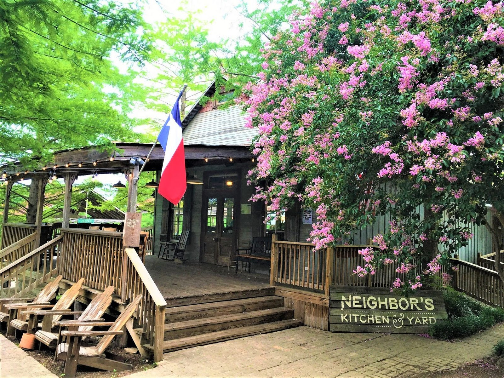

Pizza
Chicken pesto and other pies, plus wings. Full plates.
Restaurant & hangout · Bastrop, TX
Pizza, wings and local Iron Bridge Icehouse beer on a west-facing deck.

Pizza, wings, artichoke dip and peach cobbler in a cast iron skillet.
Chicken pesto and other pies, plus wings. Full plates.

Artichoke dip, brussels sprouts, spinach salad and a chicken salad sandwich.

Iron Bridge Icehouse beers from the brewery next door, and a house brewed hefeweizen.


4.5 3188 Google reviews
The location is authentic Texas Hill Country along Texas's Colorado river. The deck faces west and there are misters keeping customers cool. Our server Emma enjoyed her job and took very good care of us. We felt at home. Spinach salad and chicken pesto pizza were excellent and their house brewed hefeweisen beer was so smooth and flavorful!
Neighbors is truly one of my favorite places in Bastrop! The food is always amazing, and I especially love their brussel sprouts and artichoke dip. The pizza is also incredible! Great atmosphere, delicious food, and definitely a place I always recommend.
First time here and love it!! Food was fresh and fantastic. The vibe is relaxed and view is amazing. I was not aware they serve beer from a brewery right next door. Iron Bridge Icehouse beers along fantastic food. Shout out to our amazing server Jade!! Highly recommend!! (Best chicken salad sandwich I’ve had in years!!)

A relaxed hangout on the Colorado River with live music each weekend.
String lights, red chairs on the deck, picnic tables down to the river. Friendly servers.
601 Chestnut St Bldg C, Bastrop, TX 78602
Building C on Chestnut Street. Misters keep the west-facing deck cool. Friday and Saturday run later.